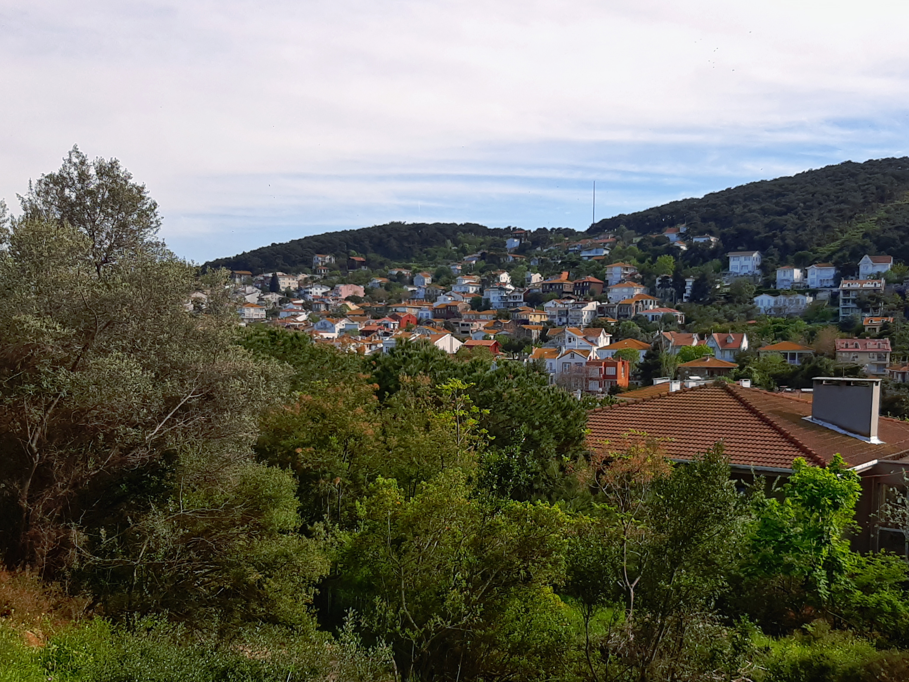
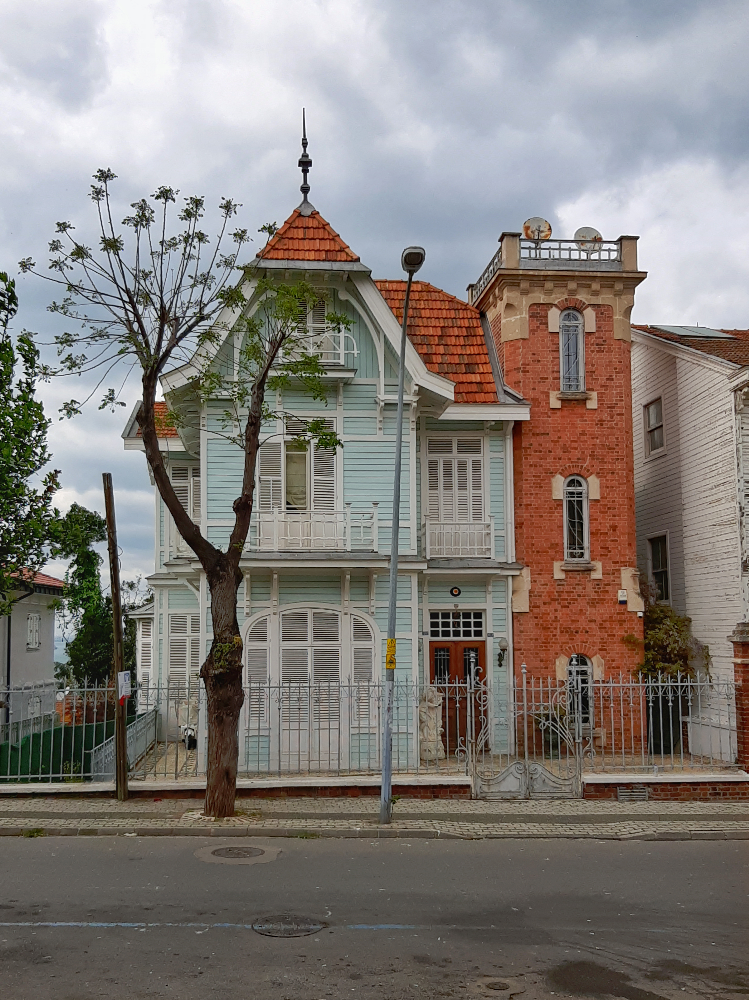

Home / Photography / Adalar Collection
You can view the photo locations on the map below.
[1] Kınalıada from a distance*

*Location on the map is approximate
[2] Kınalı Fırın Street

[3] Serap Street

[4] View from Hiristos Monastery

[5] Gönüllü Street - 1

[6] Gönüllü Street - 2

[7] Gönüllü Street - 3

[8] Madam Martha Bay

[9] View from Madam Martha Bay

[10] View from campsite near Madam Martha Bay

[11] View from the summit of Burgazada - 1

[12] View from the summit of Burgazada - 2

[13] Ümit Street

[14] View from the trail to Haghia Triada Monastery

[15] Refah Şehitleri Street - 1

[16] Refah Şehitleri Street - 2

[17] Refah Şehitleri Street - 3

[18] Lozan Zaferi Street*

*I'm not sure if this location is correct.
[19] Lale Hatun Street

[20] Çankaya Street

[21] Con Paşa Kiosk - 1

[22] Con Paşa Kiosk - 2

[23] Con Paşa Kiosk - 3

[24] Albayrak Street

[25] Splendid Palace